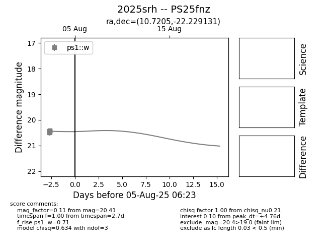

Target 2025srh at 2025-08-05 23:02, see:
TNS: wis-tns.org/object/2025srh
YSE: ziggy.ucolick.org/yse/transient_detail/2025srh
alt names
2025srh (yse,tns)
PS25fnz (panstarrs)
coordinates:
equatorial (ra, dec) = (10.7205,-22.22913)
galactic (l, b) = (100.8372,-84.72979)
photometry
last ps1::w=20.41
8 ps1::w detections
